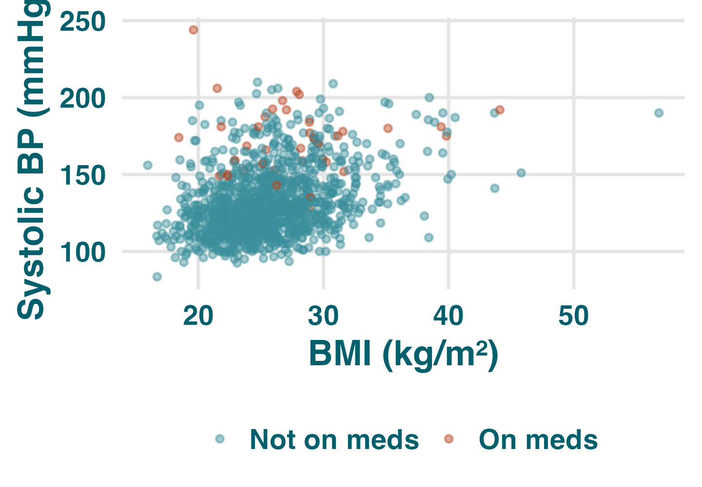
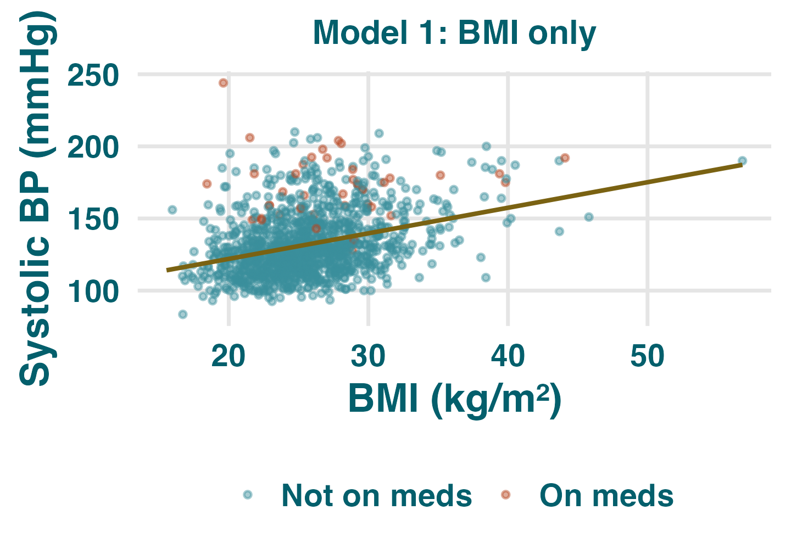
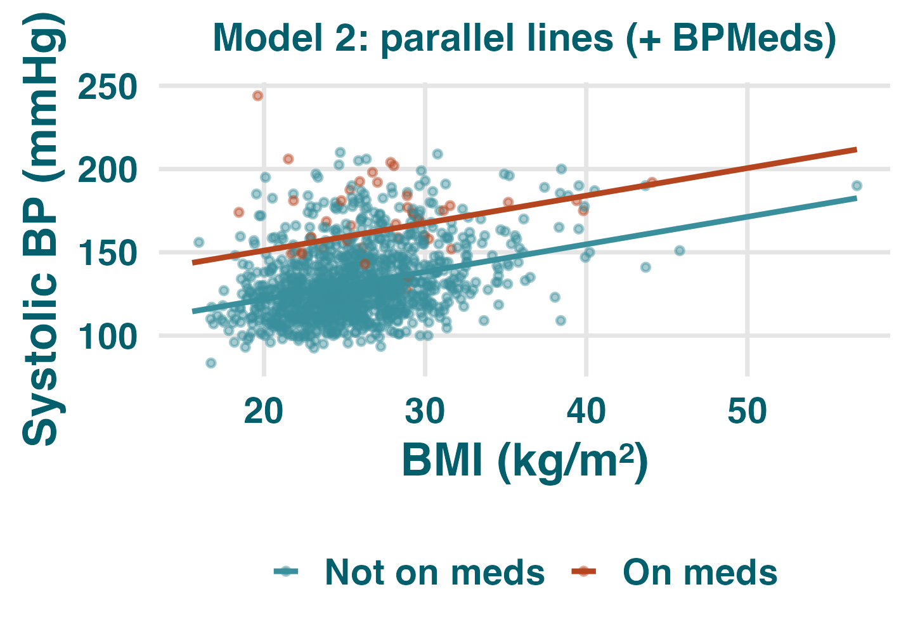
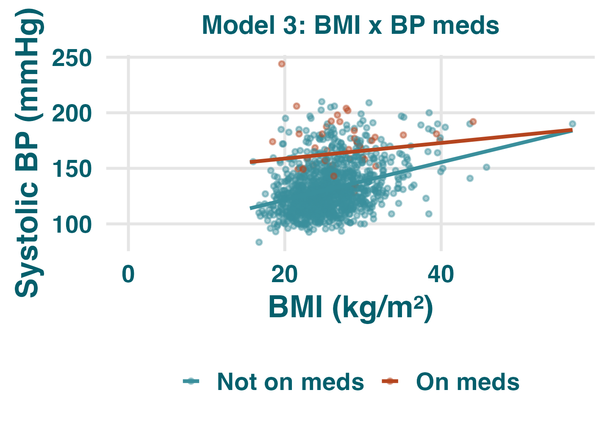

Interaction terms in regression
# Framingham Heart Study, from LSTbook dat <- LSTbook::Framingham |> select(sysBP, BMI, BPMeds, age, totChol, heartRate, cigsPerDay) |> mutate(BPMeds = factor(BPMeds, labels = c("Not on meds", "On meds"))) model_dat <- dat |> filter(!is.na(sysBP), !is.na(BMI), !is.na(BPMeds)) # colour the points by med status ggplot(model_dat, aes(BMI, sysBP, colour = BPMeds)) + geom_point(alpha = .45)

Same BMI slope in both groups; lines differ only by height.
BMI slope differs by BP-med status; lines cross or diverge.
m1 <- lm(sysBP ~ BMI, data = model_dat)
coef(summary(m1))[, c(1, 4)]
#> Estimate Pr(>|t|)
#> (Intercept) 86.551 <2e-16
#> BMI 1.772 <2e-16
model_dat$fit <- predict(m1) ggplot(model_dat, aes(BMI, sysBP)) + geom_point(alpha=.45) + geom_line(aes(y=fit))

$86.55 + 1.77(30) =$ ____ mmHg 139.7 mmHg
Meds are not in this model, so being on meds does not change the prediction.
m2 <- lm(sysBP ~ BMI + BPMeds, data = model_dat)
coef(summary(m2))[, c(1, 4)]
#> Estimate Pr(>|t|)
#> (Intercept) 88.842 <2e-16
#> BMI 1.650 <2e-16
#> BPMedsOn meds 29.240 <2e-16
model_dat$fit <- predict(m2) ggplot(model_dat, aes(BMI, sysBP, colour=BPMeds)) + geom_point(alpha=.45) + geom_line(aes(y=fit)) + scale_x_continuous(limits = c(0, NA))

A) On meds: $88.84 + 1.65(25) + 29.24 =$ ____ mmHg
B) Not on meds: $88.84 + 1.65(25) =$ ____ mmHg A) 159.3 · B) 130.1
m3 <- lm(sysBP ~ BMI + BPMeds + BMI:BPMeds, data = model_dat) # Same as: lm(sysBP ~ BMI * BPMeds, data = model_dat) coef(summary(m3))[, c(1, 4)] #> Estimate Pr(>|t|) #> (Intercept) 87.644 <2e-16 #> BMI 1.696 <2e-16 #> BPMedsOn meds 57.106 3.7e-08 #> BMI:BPMedsOn meds -0.994 0.0062
model_dat$fit <- predict(m3) ggplot(model_dat, aes(BMI, sysBP, colour=BPMeds)) + geom_point(alpha=.45) + geom_line(aes(y=fit))

Not on meds:
$\beta_1 = 1.70$
mmHg/BMI
On meds:
$\beta_1 + \beta_3 = 0.70$
mmHg/BMI
$\widehat{\text{sysBP}} = 87.64 + 1.696(30) + 57.106(1) \color{#b5451f}{- 0.994(30 \times 1)}$
$= 87.64 + 50.88 + 57.11 - 29.82 = \color{#035f6c}{165.8}$ mmHg
$87.64 + 1.696(35) =$ ____ mmHg 147.0 mmHg
m <- lm(wage ~ educ + sex + educ:sex, data = dat)
coef(summary(m))[, c(1, 4)]
#> Estimate Pr(>|t|)
#> (Intercept) 9.00 <.001
#> educ 1.70 <.001
#> sexMale 3.00 .010
#> educ:sexMale 0.80 .020
$9.0 + 1.70(16) + 3.0 + 0.80(16) =$ ____ 52.0
When to fit an interaction
m4 <- lm(sysBP ~ BMI + BPMeds + age +
totChol + heartRate + cigsPerDay,
data = model_dat)
#> Estimate Pr(>|t|)
#> (Intercept) 26.923 <2e-16
#> BMI 1.333 <2e-16
#> BPMedsOn meds 24.086 <2e-16
#> age 0.814 <2e-16
#> totChol 0.034 4.7e-07
#> heartRate 0.289 <2e-16
#> cigsPerDay -0.011 0.665
The BMI coefficient is 1.333. Holding medication status, age, cholesterol, heart rate, and smoking constant, each additional BMI unit is associated with about 1.33 mmHg higher systolic BP. This one slope applies to everyone.
m5 <- lm(sysBP ~ BMI + BPMeds + age + totChol + heartRate + cigsPerDay + BMI:BPMeds + BMI:age + BMI:totChol + BMI:heartRate + BMI:cigsPerDay + BPMeds:age + BPMeds:totChol + BPMeds:heartRate + BPMeds:cigsPerDay + age:totChol + age:heartRate + age:cigsPerDay + totChol:heartRate + totChol:cigsPerDay + heartRate:cigsPerDay, data = model_dat) length(coef(m5)) #> [1] 22 coef(summary(m5))[, c(1, 4)] #> Estimate Pr(>|t|) #> (Intercept) 81.650 0.0002 #> BMI 0.570 0.3982 #> BPMedsOn meds 32.743 0.0896 #> age 0.099 0.7740 #> totChol -0.042 0.5561 #> heartRate -0.228 0.2801 #> cigsPerDay 0.251 0.3587 #> BMI:BPMedsOn meds -1.054 0.0028 #> BMI:age 0.008 0.3526 #> BMI:totChol 0.000 0.8101 #> BMI:heartRate 0.004 0.4790 #> BMI:cigsPerDay 0.001 0.8288 #> BPMedsOn meds:age 0.224 0.3343 #> BPMedsOn meds:totChol 0.044 0.2499 #> BPMedsOn meds:heartRate -0.056 0.6440 #> BPMedsOn meds:cigsPerDay 0.220 0.2333 #> age:totChol 0.000 0.6195 #> age:heartRate 0.006 0.0529 #> age:cigsPerDay -0.004 0.2445 #> totChol:heartRate 0.001 0.2693 #> totChol:cigsPerDay -0.000 0.7089 #> heartRate:cigsPerDay -0.001 0.6731
There is no single BMI coefficient any more. The BMI slope is built from every row BMI appears in, and each interaction is multiplied by that person's own value:
slope $= 0.570 - 1.054(\text{meds}) + 0.008(\text{age})$
$+\ 0.000(\text{chol}) + 0.004(\text{HR}) + 0.001(\text{cigs})$
$0.570 + 0.008(60) + 0.004(75) \approx \color{#035f6c}{1.35}$
A different age or heart rate gives a different BMI slope, so every person effectively has their own. No single number answers "what does one more BMI unit do?"
Other studies have reported this interaction as a stable finding, so you include it to match the standard model in your field. Example: age times sex in growth curves.
You are running the study to ask whether the effect of X on Y depends on Z. The interaction coefficient is the estimate you care about, so you fit it and test it.
The study design or biology strongly suggests that one effect should differ across groups. Example: an antibiotic lowers infection severity in non-resistant strains, but has little effect on resistant strains.
If there is no specific reason to expect effect modification, an additive model is often easier to interpret and more stable. .